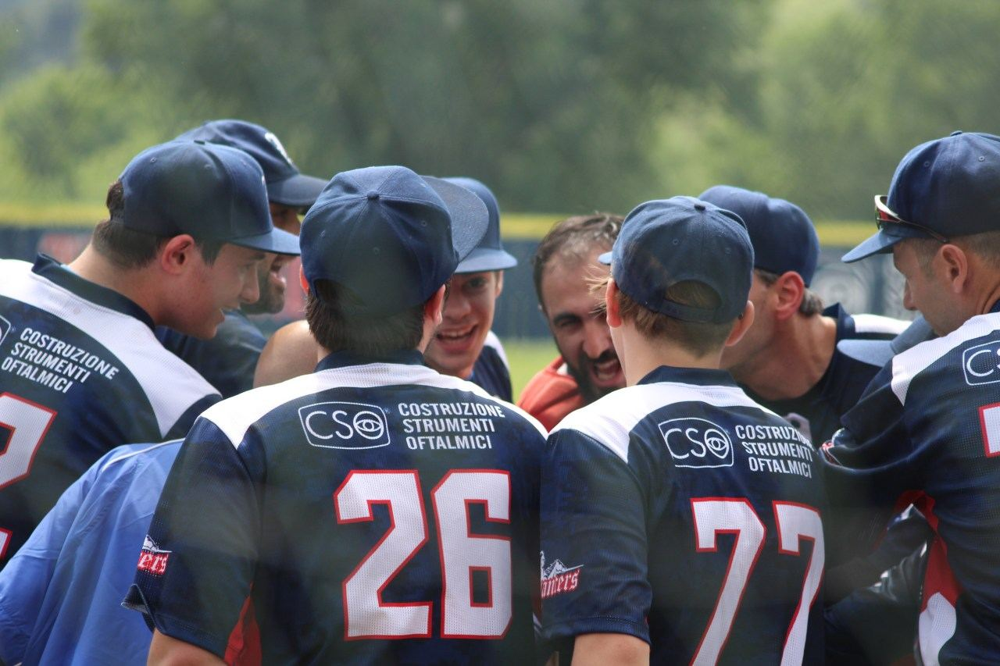
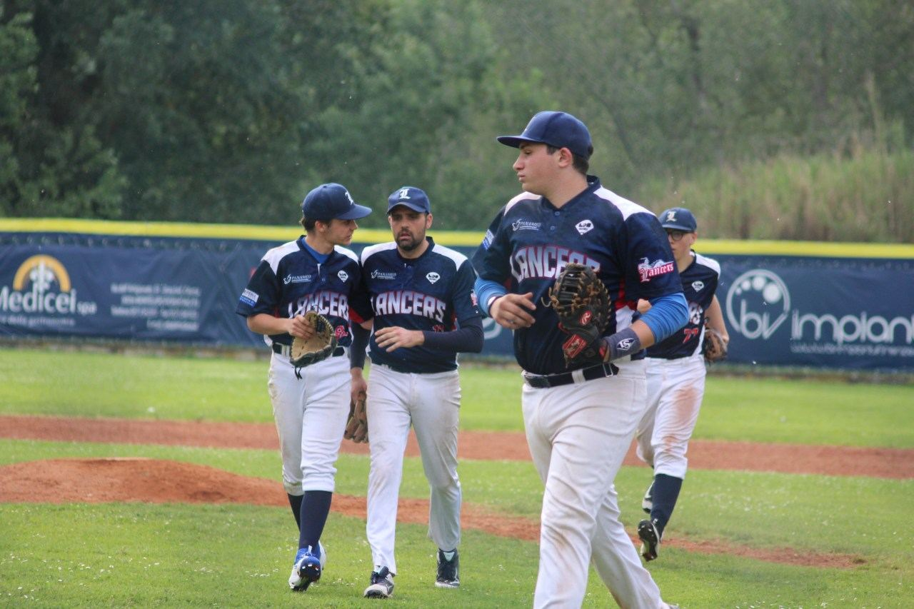
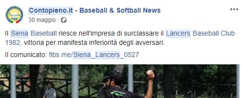

Sconfitta meritata, e conquistata sul campo, dal team senese che nel girone di ritorno ha maturato un record di 8 vittorie su 9 incontri.
I nostri ragazzi terminano la stagione con 6 vittorie a fronte di 11 sconfitte, non certo risultati da promozione ma la società si dice soddisfatta per il lavoro svolto dallo staff tecnico che ha messo in campo una formazione con ben OTTO under 18 supportati da qualche vecchio “leone” del diamante.
Tornando all’incontro di domenica possiamo dire di aver visto in campo una squadra avversaria determinata a vincere, com’è giusto che sia, ma forse fin troppo.
Già dal terzo inning la partita era ampiamente in mano alla squadra bianco/nera con il punteggio di 10-0, ma questo non faceva dormire sogni tranquilli al team senese che optava prima per una rubata e poi per un drug bunt.
A tutti i livelli del baseball, in tutti i campionati del mondo (anche in Giappone, incredibile!), con un punteggio così non si chiede all’avversario di aver pietà di noi né tanto meno di giocare con il freno a meno tirato (come si legge su sienafree.it), si chiede solo rispetto.
Noi Lancers riteniamo il rispetto uno dei fondamenti dello spirito sportivo, cerchiamo di educare i nostri ragazzi come uomini e atleti, nella sconfitta ma soprattutto nella vittoria.

Quando si vince 10 a 0 (dieci a zero) si può fare a meno di certe giocate e lasciar liberi i propri battitori di proseguire il loro cammino con belle battute che sicuramente porteranno altri punti.
Sempre sul sienafree.it si legge una bella frase di Yogi Berra (storico catcher/manager dei NY Yankees), “non è finita finchè non è finita”.
Questa frase non può essere più vera ed infatti è giusto giocare duro fino al 27esimo out (oppure il 21esimo in casi di manifesta superiorità).
Se conduciamo 10 a 0 ed i nostri avversari sono così determinati (grazie alle battute…) da recuperare qualche punto nessun problema, si torna ad utilizzare le giocate che ci occorrono per ripristinare il vantaggio perduto.
Altra situazione. Al sesto inning il battitore del Siena arrivava in prima ed utilizzava ancora una volta la rubata (punteggio di 16 a 2 ndr); uno dei nostri giocatori , preso dalla furia agonistica, esprimeva il proprio disaccordo con una frase poco sportiva che lui stesso, e lo staff tecnico, hanno condannato poco dopo.
La partita terminava qualche lancio pià avanti per cambi esauriti da parte della panchina Lancers; un infortunio costringeva all’uscita dal campo il giocatore e sanciva la vittoria del Siena.
Una vittoria che non cambia il volto della classifica finale con il Siena quinto in classifica ed i Lancers settimi.
Probabilmente il Siena voleva tornare a schiacciare i Lancers, come si legge nell’articolo della partita di andata, magari surclassandoli di punti. 
Vi invitiamo a vedere il video sotto per capire meglio, è il World Baseball Classic del 2013 e si gioca Messico contro Canada.
Si parla di professionisti, atleti che percepiscono ingaggi a 5-6 zeri.
Sul punteggio di 9-3 il battitore canadese conquista la base con una smorzata e lì parte il putiferio, battitore successivo colpito intenzionalmente e squadre in campo per una stupida ed inutile rissa.
Partiamo dal presupposto che condanniamo il comportamento della squadra del Messico, il punteggio non è così ampio da giustificare anche solo la rabbia dei messicani.
I nostri ragazzi hanno visto, e subito, questo atteggiamento.
Ogni tanto, forse, è utile anche vedere cosa non si fa su un campo da gioco per crescere come persone e come atleti.
Noi vi facciamo i nostri più sinceri complimenti per come avete combattuto in questo campionato senior; per molti era l’esordio, per altri un ritorno ma tutti come una squadra vi siete comportati in maniera egregia.
Un grazie speciale allo staff tecnico, Ghigo e Marcello, per il lavoro svolto!